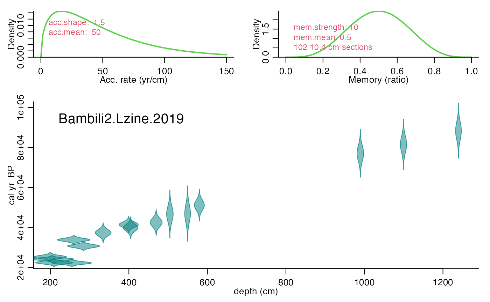
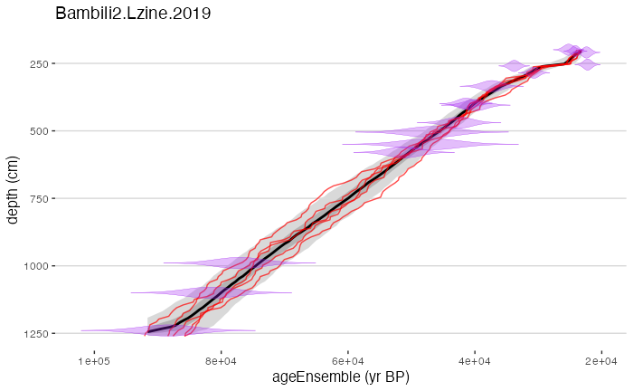

neotoma.Rmd
library(actR)
library(neotoma2)
library(lipdR)
library(tidyverse)
library(geoChronR)
#> Welcome to geoChronR version 1.0.11!
#> Note that major changes to parameter names (terms within functions) were made for version 1.0.0
#> If you've been using geoChronR for awhile, this will almost certainly break some of your code, sorry.
#> If you're new, enjoy the newly standardized terminology!It is now quite simple to get data directly from Neotoma, using the forthcoming neotoma2 package, either by searching a site using the get_sites() function, or directly with get_downloads() if you know the dataset number.
L <- neotoma2::get_sites(sitename = "Penegor Lake") %>%
get_downloads() %>%
neotoma2lipd()You can then pass that “site” object into neotoma2lipd(), part of the lipdR package, (>= 0.3.0) (for now at least), to create a LiPD object.
If that Neotoma dataset, now a LiPD object, has chronologic data, we can than run it through Bacon or another algorithm in geoChronR.
L <- runBacon(L,
bacon.dir = tempdir(),
chron.num = 1,
meas.table.num = 1,
lab.id.var = "neotomachronconrolid",
reservoir.age.14c.var = NULL,
reservoir.age.14c.uncertainty.var = NULL,
rejected.ages.var = NULL,
accept.suggestions = TRUE,
ask = FALSE,
plot.pdf = FALSE)
Let’s take a look at the age model we created.
plotChronEns(L)
#> [1] "Found it! Moving on..."
#> [1] "Found it! Moving on..."
#> [1] "plotting your chron ensemble. This make take a few seconds..."
#> Scale for 'x' is already present. Adding another scale for 'x', which will
#> replace the existing scale.